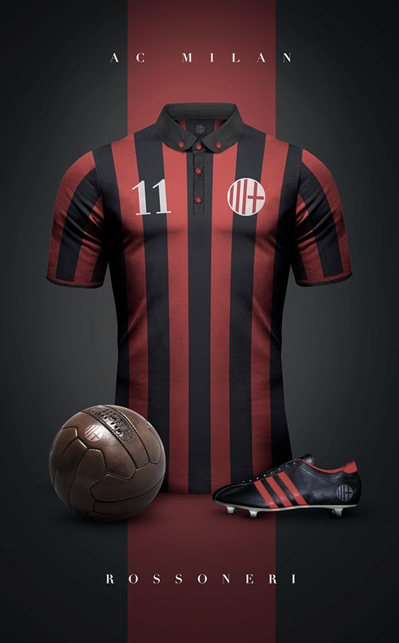

Conheça um pouco sobre o AC Milan o Gigante Italiano, faça parte da familía Milanista Rossonero
Welcome

História
A Associazione Calcio Milan (AC Milan) foi fundado como Milan Foot-Ball and Cricket Club em 1899 pelos expatriados ingleses Alfred Edwards e Herbert Kilpin. O clube reivindica 16 de dezembro daquele mesmo ano como data de fundação.
Em 1908, o Milan experimentou uma divisão causada por desentendimentos internos o que levou à formação de outra equipe sediada em Milão, o FC Internazionale Milano. Após esses eventos, o Milan não conseguiu ganhar um único título nacional até a década de 1950 quando o clube retornou ao topo do futebol italiano.
Atualmente no o AC Milan vive uma boa fase, disputando o titulo da Serie A TIM na ponta da tabela, e retornou a Champions League 21-22 após sete anos fora, onde o gigante time italiano sofreu crises financeiras e perdas de jogadores chave.
Estádio
O San Siro também conhecido como Stadio Giuseppe Meazza é o maior estádiodo futebol italiano, atualmente com uma capacidade total de 75.923. O estádio é compartilhado desde 1946 com o rival Internazionale de Milão, eles têm uma rivalidade de longa data com quem disputam o Derby della Madonnina.
San Siro é conhecido na Itália por sua atmosfera fantástica durante os jogos, em grande parte graças à proximidade das arquibancadas com o campo; sendo projetado especificamente para jogos de futebol, ao contrário de muitos estádios multiuso usados na Série A.
Elenco Atual

-
#16 Mike Maignan
-
#77 Alessandro Plizzari

-
#1 Ciprian Tatarusanu

-
#83 Antonio Mirante

-
#23 Fikayo Tomori

-
#13 Romagnoli

-
#24 Simon Kjaer

-
#46 Matteo Gabbia

-
#19 Theo Hernández

-
#5 Ballo-Touré

-
#2 Calabria

-
#25 Florenzi

-
#20 Kalulu

-
#14 Conti

-
#4 I. Bennacer

-
#8 Sandro Tonali

-
#41 Bakayoko

-
#79 Kessié

-
#33 Rade Krunic

-
#10 Brahim Díaz

-
#30 Junior Messias

-
#27 Daniel Maldini

-
#12 Rebic

-
#17 Rafael Leão

-
#56 Saelemaekers

-
#7 Samu Castillejo

-
#64 Pietro Pellegri

-
#9 O. Giroud

-
#11 Z. Ibrahimovic


Títulos
1- Mundial de Clubes da FIFA
2-Taça dos Vencedores das Taças UEFA
3-Copas Intercontinentais
5-Copa Itália
5-SuperCopa da UEFA
7-Super Copa Italiana
7-Champions League
18-Seria A TIM